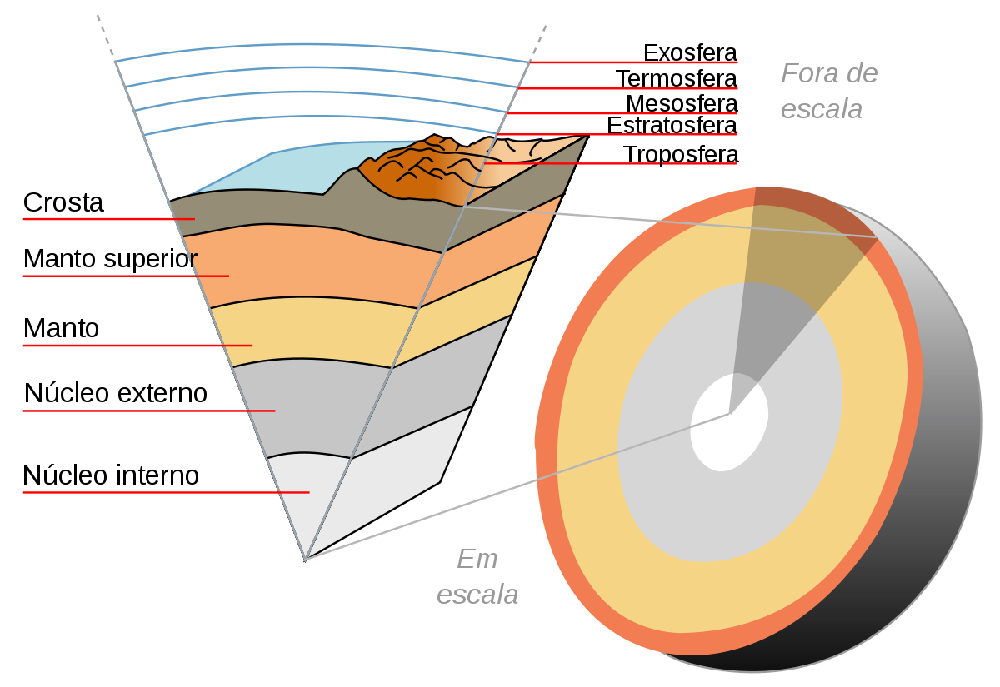
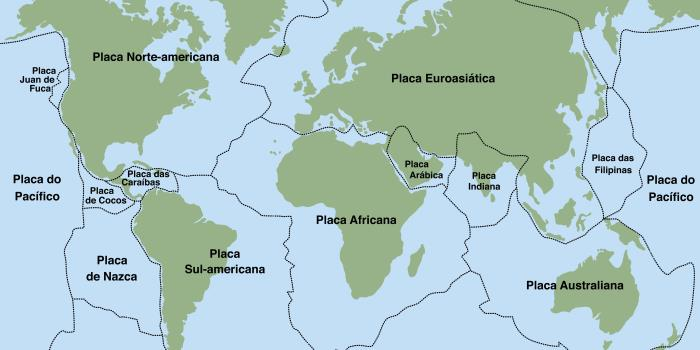
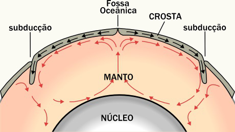

O Manto Terrestre
O manto terrestre é a maior camada da geosfera, com aproximadamente 2,9 quilômetros de espessura. Formou-se há pelo menos 3,8 bilhões de anos e é composto, principalmente por rochas e minerais com alto teor de ferro e magnésio. Essa camada é subdividida em manto superior e inferior e a diferença entre as duas está na consistência das rochas, que é medida por meio de ondas sísmicas.
Por ser a maior camada da Terra, o manto é a camada responsável por ter 83% do volume do planeta e 67% de sua massa.
Diagrama das camadas terrestres (incluindo o manto). Fonte: Wikipédia.
O manto superior é aquele que vem logo após a crosta terrestre. Permanece a temperaturas médias de 100º C e é nele que o magma circula de maneira cíclica, formando as células de convecção no interior da Terra, que são as principais responsáveis pela movimentação das placas tectônicas.
Mapa das placas tectônicas. Fonte: COC (Placas Tectônicas - COC)
Já o manto inferior é o que envolve o núcleo da Terra. Apresenta temperaturas de até 2000°C e estima-se que essa camada apresente uma grande quantidade de ferro em sua composição química, o que eleva sua densidade.
Em razão da força da gravidade e da pressão, a densidade do manto inferior é bem superior e as movimentações dos fluidos são mais intensas.
Na camada do manto existem as chamadas correntes de convecção, que são movimentações cíclicas e circulares que ocorrem com o material plástico que o compõe. Esse movimento é lento, porém exerce uma pressão elevada sobre a crosta terrestre, propiciando a ocorrência de eventos como a movimentação das placas tectônicas, terremotos e vulcanismos.
Correntes de Convecção. Fonte: Alunos Online - UOL (Correntes de Convecção da Terra - UOL)